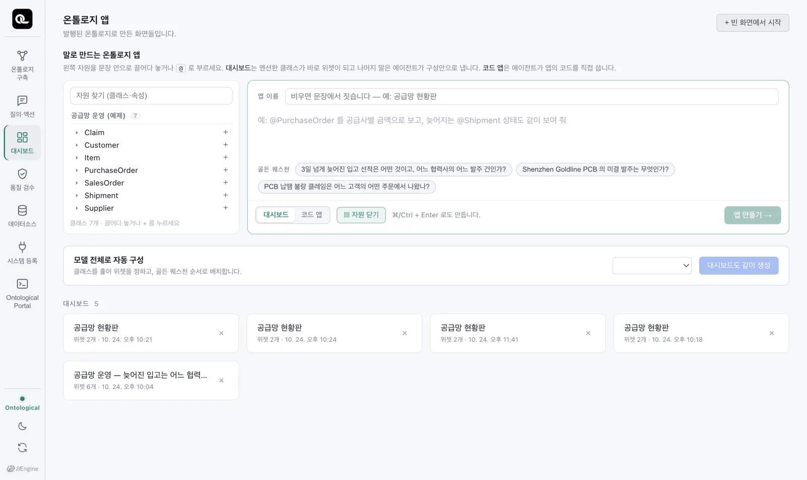
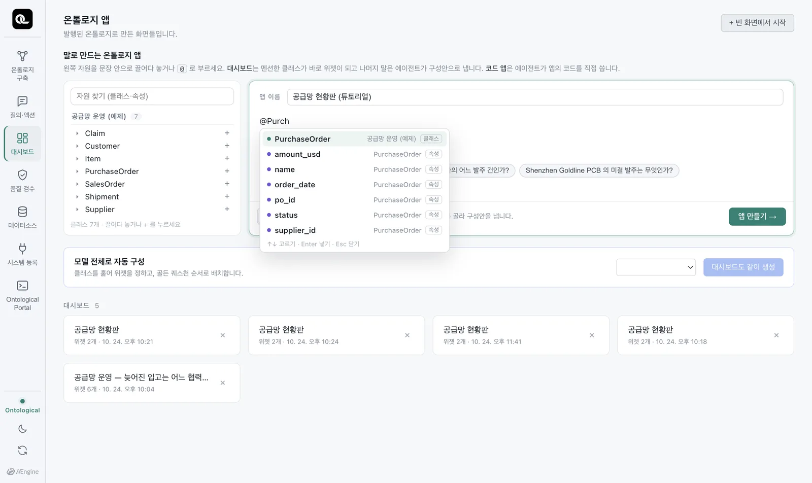
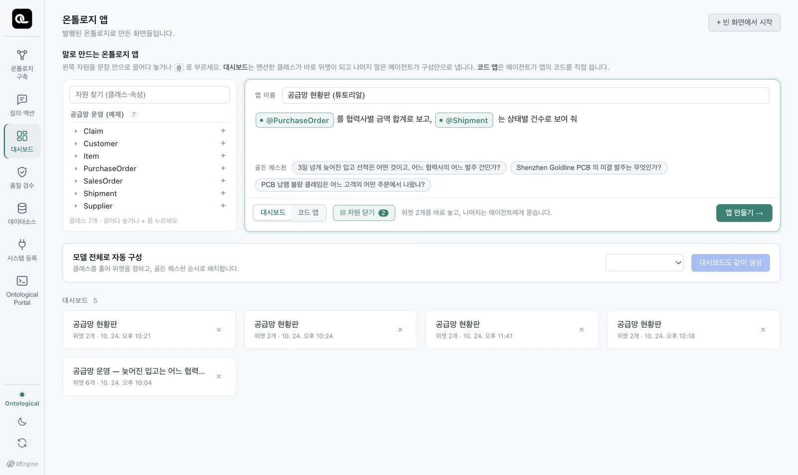
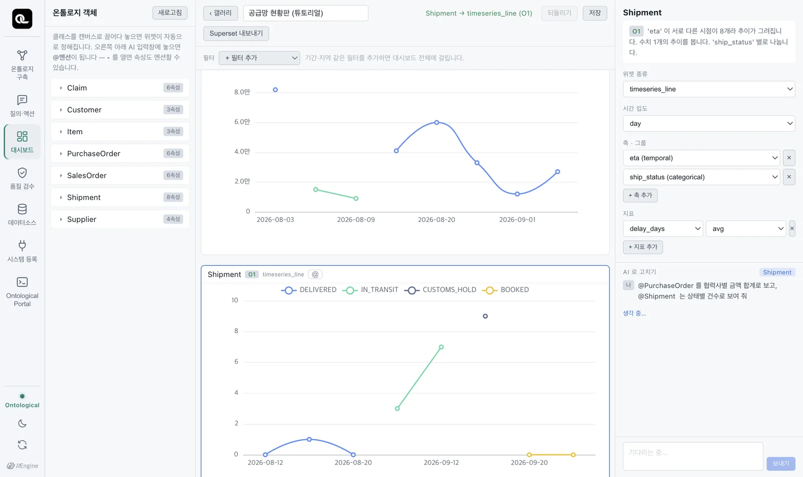
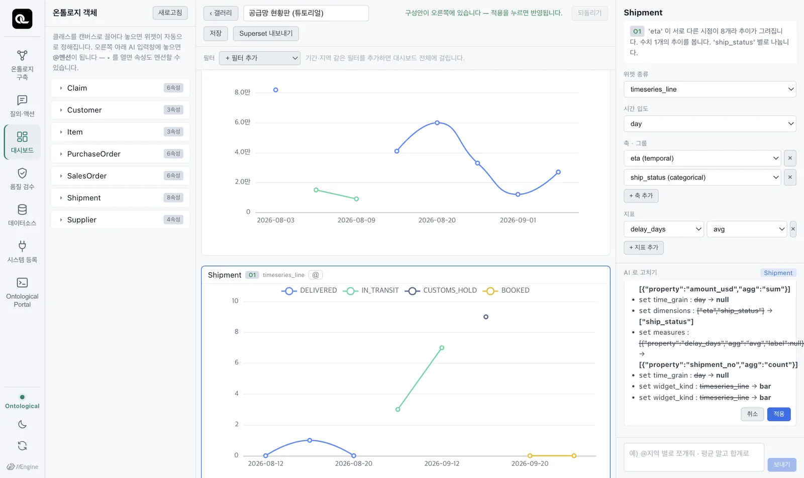
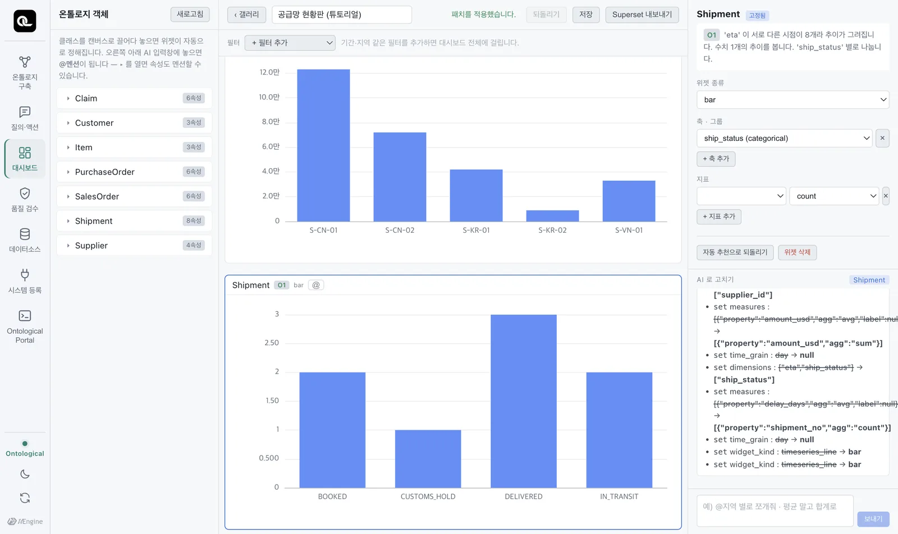

「온톨로지 앱」에서 클래스와 속성을 @멘션해 대시보드를 만듭니다. 엔진이 위젯을 바로 고르고, 에이전트가 문장의 나머지를 구성안으로 내면, 사람이 적용합니다.
두 가지 앱#
같은 온톨로지 위에서 앱을 두 가지 방식으로 만듭니다.
| 대시보드 | 코드 앱 | |
|---|---|---|
| 만드는 법 | 위젯(차트·표)을 엮음 | 에이전트가 HTML·JavaScript 코드를 씀 |
| 빠르기 | 위젯은 약 1초, 구성안은 수십 초 | 1~3분 |
| 자유도 | 정해진 위젯 안에서 | 무엇이든 (화면 구성·상호작용) |
| 고치기 | 위젯 설정, 또는 말로 | 말로, 또는 코드를 직접 |
| 다루는 장 | 이 장 | 18장~19장 |
앱 만들기 화면#
홈의 「온톨로지 앱」 카드를 엽니다. 맨 위가 「말로 만드는 온톨로지 앱」입니다.

| 영역 | 내용 |
|---|---|
| 왼쪽 자원 트리 | 발행된 온톨로지의 모델 › 클래스 › 속성. 문장 안으로 끌어다 놓을 수 있습니다. |
| 입력창 | 만들고 싶은 화면을 설명합니다. @를 치면 클래스·속성 후보가 뜹니다. |
| 예시 칩 | 이 온톨로지의 골든 퀘스천. 누르면 입력창에 들어갑니다. |
| 대시보드 / 코드 앱 | 무엇으로 만들지 고릅니다. |
| 갤러리 | 만든 앱들 |
따라 하기 — 공급망 현황판#
- 앱 이름에
공급망 현황판을 적고, 「대시보드」를 고릅니다. - 입력창에
@Purch까지 치면 후보가 뜹니다. ↑↓로PurchaseOrder를 고르고 Enter. - 이어서
를 협력사별 금액 합계로 보고,를 칩니다. - 왼쪽 트리에서
Shipment를 문장 안으로 끌어다 놓고,는 상태별 건수로 보여 줘를 칩니다. - 「앱 만들기」를 누릅니다.

고른 자원은 칩이 되어 문장 안에 남습니다. 사람도 에이전트도 무엇을 가리키는지 헷갈리지 않습니다. 칩은 백스페이스 한 번에 통째로 지워집니다.

엔진이 먼저, 에이전트가 다음#
「앱 만들기」를 누르면 두 가지가 차례로 일어납니다.
1. 엔진이 위젯을 바로 정합니다(약 1초). 멘션한 클래스마다 데이터를 살펴(속성의 타입, 값의 종류) 적당한 위젯을 고릅니다. 이 단계는 규칙대로 움직이므로 늘 같은 결과가 나옵니다. 처음에는 날짜별 추이 그래프가 놓였습니다.

2. 에이전트가 문장의 나머지를 구성안으로 냅니다. “협력사별 금액 합계”, “상태별 건수”는 에이전트에게 갑니다. 에이전트는 지금 구성을 읽고 무엇을 바꿀지 구성안(diff)을 냅니다(실측 약 35초). 오른쪽 「AI로 고치기」에 바뀔 내용이 취소선과 함께 보입니다.

3. 사람이 적용합니다. 구성안은 「적용」을 눌러야 반영됩니다. 마음에 안 들면 적용하지 않고 말로 다시 고쳐 달라고 하면 됩니다.

이어서 고치기#
- 위젯을 멘션: 위젯 머리의
@를 누르면 그 위젯이 입력창에 칩으로 들어갑니다. “@Shipment 위젯을 원형 그래프로”처럼 이어 고칩니다. - 직접 설정: 위젯을 고르면 오른쪽에 종류·축·지표 설정이 나옵니다. 「자동 추천으로 되돌리기」도 있습니다.
- 필터: 위쪽 「+ 필터 추가」로 대시보드 전체에 걸리는 조건을 겁니다.
- 선택 연동: 막대 하나를 누르면 그 값이 대시보드의 선택이 되어, 관련 위젯에 필터로 걸립니다.
- 저장: 오른쪽 위 「저장」. 「되돌리기」로 방금 적용한 구성안을 되돌립니다.
낮/밤 테마를 바꾸면 차트의 축과 글자 색도 함께 바뀝니다.
실습 과제
@Claim을 심각도별 건수로,@SalesOrder를 고객별 수량 합계로 보여 주는 「고객 품질 현황」 대시보드를 만드세요.- 위젯 하나를 멘션해 표(table)로 바꿔 달라고 해 보세요.
- 「대시보드」 대신 「코드 앱」을 고르면 무엇이 달라질지 예상해 보고, 다음 장으로 가세요.
도움말
- 예: “@Claim 은 severity 별 건수로, @SalesOrder 는 고객별 qty 합계로 보여 줘”. 속성도
@severity처럼 멘션할 수 있습니다(트리에서 클래스를 펼치면 속성이 보입니다). - 위젯 머리의
@를 누르고 “표로 바꿔 줘”. 구성안이 오면 「적용」.